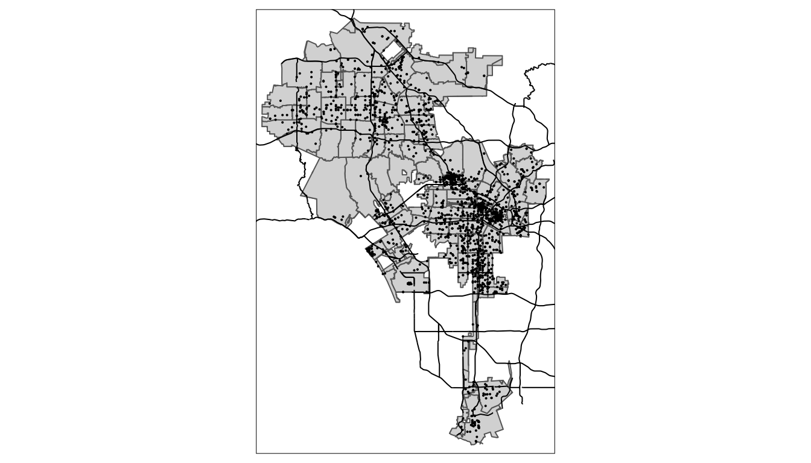

R Class 2 Getting Started with Data in R
2.1 Learn Objectives
After this lesson, learners will be able to:
- Describe the purpose and use of each pane in the RStudio IDE
- Locate buttons and options in the RStudio IDE
- Know how to run code in R
- How to save things to an object in R
- Call functions
- What packages are and where to install and load them
- Inspecting data and doing simple plots
- Make a map in R, exporting images in R
2.2 What are R and RStudio?
At its simplest, R is like a car’s engine while RStudio is like a car’s dashboard as illustrated in Figure.

Figure 2.1: Analogy of difference between R and RStudio.
More precisely, R is a programming language that runs computations, while RStudio is an integrated development environment (IDE) that provides an interface by adding many convenient features and tools. So just as the way of having access to a speedometer, rearview mirrors, and a navigation system makes driving much easier, using RStudio’s interface makes using R much easier as well.
2.2.1 Using R via RStudio
Recall our car analogy from earlier. Much as we don’t drive a car by interacting directly with the engine but rather by interacting with elements on the car’s dashboard, we won’t be using R directly but rather we will use RStudio’s interface.
2.3 How do I code in R?
Now that you’re set up with R and RStudio in RStudio Cloud, you are probably asking yourself “OK. Now how do I use R?”. The first thing to note is that unlike other statistical software & mapping programs like Excel, SPSS, or QGIS that provide point-and-click interfaces, R is an interpreted language. This means you have to type in commands written in R code. In other words, you get to code/program in R. Note that we’ll use the terms “coding” and “programming” interchangeably in this book.
While it is not required to be a seasoned coder/computer programmer to use R, there is still a set of basic programming concepts that R users need to understand. Consequently, while this class is not focused on programming, you will still learn just enough of these basic programming concepts needed to explore and analyze data effectively.
2.3.1 Basic programming concepts and terminology
We now introduce some basic programming concepts and terminology. Instead of asking you to learn all these concepts and terminology right now, we’ll guide you so that you’ll “learn by doing.” Note that in lesson we will always use a different font to distinguish regular text from computer_code. The best way to master these topics is, in our opinions, through deliberate practice with R and lots of repetition.
- Basics:
- Console: where you enter in commands.
- Running code: the act of telling R to perform an act by giving it commands in the console.
- Objects: where values are saved in R. We’ll show you how to assign values to objects and how to display the contents of objects.
- Data types: integers, doubles/numerics, logicals, and characters. Integers are values like -1, 0, 2, 4092. Doubles or numerics are a larger set of values containing both the integers but also fractions and decimal values like -24.932 and 0.8. Logicals are either
TRUEorFALSEand characters are text such as “cabbage”, “The Wire”, and “This ramen is delicious.” Note that characters are often denoted with the quotation marks around them.
- Vectors: a series of values. These are created using the
c()function, wherec()stands for “combine” or “concatenate.” For example,c(6, 11, 13, 31, 90, 92)creates a six element series of positive integer values . - Factors: categorical data are commonly represented in R as factors. Categorical data can also be represented as strings. We’ll see this difference as we progress through the book.
- Data frames: rectangular spreadsheets. They are representations of datasets in R where the rows correspond to observations and the columns correspond to variables that describe the observations. We’ll cover data frames later in Section.
- Conditionals:
- Testing for equality in R using
==(and not=, which is typically used for assignment). For example,2 + 1 == 3compares2 + 1to3and is correct R code, while2 + 1 = 3will return an error. - Boolean algebra:
TRUE/FALSEstatements and mathematical operators such as<(less than),<=(less than or equal), and!=(not equal to). For example,4 + 2 >= 3will returnTRUE, but3 + 5 <= 1will returnFALSE. - Logical operators:
&representing “and” as well as|representing “or.” For example,(2 + 1 == 3) & (2 + 1 == 4)returnsFALSEsince both clauses are notTRUE(only the first clause isTRUE). On the other hand,(2 + 1 == 3) | (2 + 1 == 4)returnsTRUEsince at least one of the two clauses isTRUE.
- Testing for equality in R using
- Functions, also called commands: Functions perform tasks in R. They take in inputs called arguments and return outputs. You can either manually specify a function’s arguments or use the function’s default values.
- For example, the function
seq()in R generates a sequence of numbers. If you just runseq()it will return the value 1. That doesn’t seem very useful! This is because the default arguments are set asseq(from = 1, to = 1). Thus, if you don’t pass in different values forfromandtoto change this behavior, R just assumes all you want is the number 1. You can change the argument values by updating the values after the=sign. If we try outseq(from = 2, to = 5)we get the result2 3 4 5that we might expect. - We’ll work with functions a lot throughout this book and you’ll get lots of practice in understanding their behaviors. To further assist you in understanding when a function is mentioned in the book, we’ll also include the
()after them as we did withseq()above.
- For example, the function
This list is by no means an exhaustive list of all the programming concepts and terminology needed to become a savvy R user; such a list would be so large it wouldn’t be very useful, especially for novices. Rather, we feel this is a minimally viable list of programming concepts and terminology you need to know before getting started. We feel that you can learn the rest as you go. Remember that your mastery of all of these concepts and terminology will build as you practice more and more.
2.3.2 Errors, warnings, and messages
One thing that intimidates new R and RStudio users is how it reports errors, warnings, and messages. R reports errors, warnings, and messages in a glaring red font, which makes it seem like it is scolding you. However, seeing red text in the console is not always bad.
R will show red text in the console pane in three different situations:
- Errors: When the red text is a legitimate error, it will be prefaced with “Error in…” and will try to explain what went wrong. Generally when there’s an error, the code will not run. For example, we’ll see in Subsection if you see
Error in ggplot(...) : could not find function "ggplot", it means that theggplot()function is not accessible because the package that contains the function (ggplot2) was not loaded withlibrary(ggplot2). Thus you cannot use theggplot()function without theggplot2package being loaded first. - Warnings: When the red text is a warning, it will be prefaced with “Warning:” and R will try to explain why there’s a warning. Generally your code will still work, but with some caveats.
- Messages: When the red text doesn’t start with either “Error” or “Warning”, it’s just a friendly message. You’ll see these messages when you load R packages in the upcoming Subsection or when you read data saved in spreadsheet files with the
read_csv()function. These are helpful diagnostic messages and they don’t stop your code from working. Additionally, you’ll see these messages when you install packages too usinginstall.packages().
Remember, when you see red text in the console, don’t panic. It doesn’t necessarily mean anything is wrong. Rather:
- If the text starts with “Error”, figure out what’s causing it. Think of errors as a red traffic light: something is wrong!
- If the text starts with “Warning”, figure out if it’s something to worry about. For instance, if you get a warning about missing values in a scatterplot and you know there are missing values, you’re fine. If that’s surprising, look at your data and see what’s missing. Think of warnings as a yellow traffic light: everything is working fine, but watch out/pay attention.
- Otherwise, the text is just a message. Read it, wave back at R, and thank it for talking to you. Think of messages as a green traffic light: everything is working fine and keep on going!
2.3.3 Tips on learning to code
Learning to code/program is quite similar to learning a foreign language. It can be daunting and frustrating at first. Such frustrations are common and it is normal to feel discouraged as you learn. However, just as with learning a foreign language, if you put in the effort and are not afraid to make mistakes, anybody can learn and improve.
Here are a few useful tips to keep in mind as you learn to program:
- Remember that computers are not actually that smart: You may think your computer or smartphone is “smart,” but really people spent a lot of time and energy designing them to appear “smart.” In reality, you have to tell a computer everything it needs to do. Furthermore, the instructions you give your computer can’t have any mistakes in them, nor can they be ambiguous in any way.
- Take the “copy, paste, and tweak” approach: Especially when you learn your first programming language or you need to understand particularly complicated code, it is often much easier to take existing code that you know works and modify it to suit your ends. This is as opposed to trying to type out the code from scratch. We call this the “copy, paste, and tweak” approach. So early on, we suggest not trying to write code from memory, but rather take existing examples we have provided you, then copy, paste, and tweak them to suit your goals. After you start feeling more confident, you can slowly move away from this approach. Think of the “copy, paste, and tweak” approach as training wheels for a child learning to ride a bike. After getting comfortable, they won’t need them anymore.
- The best way to learn to code is by doing: Rather than learning to code for its own sake, we find that learning to code goes much smoother when you have a goal in mind or when you are working on a particular project, like analyzing data that you are interested in and that is important to you.
- Practice is key: Just as the only method to improve your foreign language skills is through lots of practice and speaking, the only method to improving your coding skills is through lots of practice. Don’t worry, however, we’ll give you plenty of opportunities to do so!
2.4 How to run code/first script
- We can do basic math in R
- To run the code we can put our cursor on the line we want to run and click on Run in the top right of the script pane.
## [1] 8- We can also highlight multiple lines of code and click Run
- This is good, but it takes extra time to click and point when you are coding, so RStudio have keyboard shortcuts to let you run code.
- Use
+ on Mac and + on windows - let’s try a few more expressions:
## [1] "Tim Dennis"## [1] "Your Name"2.5 Explore your first datasets
The data we’ll use is in our data/ folder. Let’s look at it - its a CSV? What does that stand for?
Data comes to us in a variety of formats, from pictures to text to numbers. Throughout this class, we’ll focus on datasets that are saved in “spreadsheet”-type format. This is probably the most common way data are collected and saved in many fields. But in R, we can read in data in many formats - this means that R will load the data into it’s environment and make it ready for R to work with it.
Before we start exploring our arrests data in R, let’s first load the packages needed for this lesson. What’s a package? We haven’t talked about those yet?
2.6 What are Packages
R packages extend the functionality of R by providing additional functions, data, and documentation. They are written by a worldwide community of R users and can be downloaded for free from the internet.
A good analogy for R packages is they are like apps you can download onto a mobile phone:

Figure 2.2: Analogy of R versus R packages.
So R is like a new mobile phone: while it has a certain amount of features when you use it for the first time, it doesn’t have everything. R packages are like the apps you can download onto your phone from Apple’s App Store or Android’s Google Play.
What are the steps to doing this? To install a package, click on the Packages tab on the right bottom pane. Now you can click Install and start typing the package you want to install and it will download.
How do you find out about packages? Take a look at task views on the CRAN (Comprehensive R Archive Network). Packages are grouped by topic. For this class, because we are using R Studio Cloud, I’ve already installed the packages we need.
Once you install a package you need to tell R you want to use it. We do this with the library() function. Ok but what is a function? Anybody know? Right functions perform tasks in R. They take inputs called arguments (in this case our csv file) and return some kind of output. library() takes a package we want to use in our R code and loads it into our current R environment. Let’s try now:
tidyverse gives us access to a bunch of other functions we can now use after it is loaded. One is called read_csv(). What if we know we need to use read_csv() to read in our data, but we don’t know how. What would we do? We use R’s built in help features to get information on the functions. In R we use a ? before the function without the trailing parentheses. Type this code in RStudio and run it:
We can also call the help menu by using the help() function:
It opens the help documentation in the Help tab in the bottom right RStudio pane. It contains a description, usage, arguments and at the bottom, examples, for the function. We see the first argument of read_csv() is a file meaning read_csv() needs the file location so it can read the file into R. With this information let’s read write our read_csv() function so it knows where our arrests data is. Remember from earlier, the arrests data is in the data/ folder in our project.
Run the the following code:
Ok, notice we need to quote the file location and name. This is because files paths and names are strings in R. Now when we run it, it outputs the dataset to the console. That’s great! We can see our data. Let’s get practice running it by running it again.
## Parsed with column specification:
## cols(
## latitude = col_double(),
## longitude = col_double(),
## zipcode = col_double(),
## arr_date2 = col_date(format = ""),
## arrest_time = col_time(format = ""),
## age = col_double(),
## sex = col_character(),
## race_cat = col_character(),
## arrest_type = col_character(),
## charge = col_character()
## )## # A tibble: 2,368 x 10
## latitude longitude zipcode arr_date2 arrest_time age sex race_cat
## <dbl> <dbl> <dbl> <date> <time> <dbl> <chr> <chr>
## 1 34.0 -118. 90021 2018-08-12 15:00 52 M LatinX
## 2 33.9 -118. 90059 2018-08-12 22:00 37 M Black
## 3 34.1 -118. 90036 2018-08-12 22:20 28 M Black
## 4 34.2 -118. 91605 2018-08-12 18:40 28 M LatinX
## 5 34.0 -118. 90037 2018-08-12 19:30 23 M LatinX
## 6 34.3 -118. 91342 2018-08-12 19:48 36 M LatinX
## 7 34.2 -119. 91324 2018-08-12 01:35 62 M LatinX
## 8 34.2 -118. 91401 2018-08-12 15:00 36 M Other
## 9 34.1 -118. 90046 2018-08-12 15:00 28 M Black
## 10 34.1 -118. 91604 2018-08-12 08:00 53 M White
## # … with 2,358 more rows, and 2 more variables: arrest_type <chr>,
## # charge <chr>Look at the output in the console. It gives us some important information about our data frame.
Inspect the Console Data Output
What does the output tell us? How many rows are in our data? Columns? What about this part?
cols( latitude = col_double(),
longitude = col_double(),
zipcode = col_double(),
age = col_double(),
sex = col_character(),
race_cat = col_character(),
arrest_type = col_character(),
arr_date2 = col_date(format = "")
)
What is this telling us about our data?
Yes, the last part tells us the type of data R thinks our data is. age is a number of double type, sex is a character type, arr_date2 is a date.
This has been helpful, but the problem is we want to do more with our data than outputting it to the console. In order to save our data and work on it, we need to make it into an object in R. Let’s do this now by typing the following and running it:
## Parsed with column specification:
## cols(
## latitude = col_double(),
## longitude = col_double(),
## zipcode = col_double(),
## arr_date2 = col_date(format = ""),
## arrest_time = col_time(format = ""),
## age = col_double(),
## sex = col_character(),
## race_cat = col_character(),
## arrest_type = col_character(),
## charge = col_character()
## )Getting data into RStudio Cloud
The data we are using in this class has been provided for us, but what if you want to get data into RStudio Cloud?
2.7 What to do first after you read in your data?
After we run this, notice the top left Environment tab in RStudio. We now see arrests listed under Data. We can click on that to open and look at it in an arrests tab in our main editing window. Take a moment and explore the data via this window? Notice you can filter the data, sort and view the data, but not edit it.
The below functions take as their “argument” (their input) the data frame.
- Using the
View()function, which brings up RStudio’s built-in spreadsheet viewer.
- This is the same as clicking on the data frame in the Environment tab
- Using the
glimpse()function, which is included in thedplyrpackage. - Using the
str()function - gives you similar info asglimpse() - The functions
head()andtail()also let you inspect the data frame. $is a symbol that let’s us look at one column of a data frame, like so:
2.7.1 Ways to get an overview of your data
Often we want to see counts or summary statistics of our data. One easy way is to use the package DataExplorer to create a report on our data frame. Let’s see how it works:
#remember we need to tell r we want to use DataExplorer
library(DataExplorer)
#DataExplorer has a function called create_report()
create_report(arrests)This gives us a webpage with a bunch of information on our report. Consider this a 10,000 foot view of the data.
Another thing I like to do is see a contingency table of a specific variable:
##
## Black LatinX Other White
## 683 1101 156 428This gives you the tallies by that column in your data frame. Lastly we can view the summary statistics with the summary() function:
## latitude longitude zipcode arr_date2
## Min. :33.7 Min. :-119 Min. :90001 Min. :2018-08-06
## 1st Qu.:34.0 1st Qu.:-118 1st Qu.:90017 1st Qu.:2018-08-08
## Median :34.1 Median :-118 Median :90041 Median :2018-08-09
## Mean :34.1 Mean :-118 Mean :90414 Mean :2018-08-09
## 3rd Qu.:34.2 3rd Qu.:-118 3rd Qu.:91303 3rd Qu.:2018-08-11
## Max. :34.3 Max. :-118 Max. :91607 Max. :2018-08-12
## NA's :5
## arrest_time age sex race_cat
## Length:2368 Min. : 1.0 Length:2368 Length:2368
## Class1:hms 1st Qu.:25.0 Class :character Class :character
## Class2:difftime Median :33.0 Mode :character Mode :character
## Mode :numeric Mean :35.9
## 3rd Qu.:45.0
## Max. :87.0
##
## arrest_type charge
## Length:2368 Length:2368
## Class :character Class :character
## Mode :character Mode :character
##
##
##
## This provides you with the min, median, mean quartiles, and max all at once.
2.8 Looking at specific variables
We will often want to look at graphs of specific variables or how they relate to others. We can use a plotting package for this? The most popular one in R is called ggplot2 and let’s us make publication quality graphics of our data.

2.8.1 Variable distribution
## `stat_bin()` using `bins = 30`. Pick better value with `binwidth`.
2.8.3 Ggplot map
How about we make a map with GGPLOT?
We can see the general shape of LA, but there are limits to what you can do with geospatial data in ggplot. It doesn’t know what to do with the latitude and longitude beyond adding the points to a plot. It has no sense of the layers we used in QGIS. But other R packages gives us this capabilities.
2.9 Mapping in R
The one issue is that we need to tell arrests that it is a spatial object in R. To do that we need to use a few spatial packages. Let’s load them.
## Linking to GEOS 3.7.2, GDAL 2.4.2, PROJ 5.2.0sf stands for spatial features. tmap let’s us plot maps like ggplot. Ok, first up, let’s convert our arrests data to a spatial feature.
Let’s look at this new spatial data frame:
We now have a column called geometry at the end of our data frame. This contains our latitude and longitudes.
One thing nice is that we can use the plot() function to plot our spatial data frame.

But the problem is that we still have no context for our points. We need the layers of polygons we had in QGIS to let us know this is LA. Let’s look at this in a package called tmaps (thematic maps).
Nice, but again, we lack geographic boundaries and other shapes. Just like in QGIS, however, we can read in various shapefiles – the ones ending in .shp – to provide our map some boundaries. We do this by using the function st_read. Let’s look at our help documentation on st_read.
Inside our data/ folder we have the shape files we used in our QGIS part of the class plus an new one on the LA county boundaries. Let’s read them in individually and note the output, especially the geometry type.
#geometry type: MULTILINESTRING
la_county <- st_read(dsn ="data/DRP_COUNTY_BOUNDARY/DRP_COUNTY_BOUNDARY.shp")## Reading layer `DRP_COUNTY_BOUNDARY' from data source `/Users/timdennis/instruction/afam188/afam188-r/data/DRP_COUNTY_BOUNDARY/DRP_COUNTY_BOUNDARY.shp' using driver `ESRI Shapefile'
## Simple feature collection with 2 features and 2 fields
## geometry type: MULTILINESTRING
## dimension: XY
## bbox: xmin: 6280000 ymin: 1380000 xmax: 6670000 ymax: 2120000
## epsg (SRID): 2229
## proj4string: +proj=lcc +lat_1=35.46666666666667 +lat_2=34.03333333333333 +lat_0=33.5 +lon_0=-118 +x_0=2000000.0001016 +y_0=500000.0001016001 +ellps=GRS80 +towgs84=0,0,0,0,0,0,0 +units=us-ft +no_defs#geometry type: MULTIPOLYGON
la_zips <- st_read(dsn = "data/Los_Angeles_City_Zip_Codes/Los_Angeles_City_Zip_Codes.shp")## Reading layer `Los_Angeles_City_Zip_Codes' from data source `/Users/timdennis/instruction/afam188/afam188-r/data/Los_Angeles_City_Zip_Codes/Los_Angeles_City_Zip_Codes.shp' using driver `ESRI Shapefile'
## Simple feature collection with 157 features and 7 fields
## geometry type: MULTIPOLYGON
## dimension: XY
## bbox: xmin: -119 ymin: 33.7 xmax: -118 ymax: 34.3
## epsg (SRID): 4326
## proj4string: +proj=longlat +datum=WGS84 +no_defs#geometry type: MULTILINESTRING
la_freeways <- st_read(dsn ="data/CAMS_FREEWAY_SHIELDS/CAMS_FREEWAY_SHIELDS.shp")## Reading layer `CAMS_FREEWAY_SHIELDS' from data source `/Users/timdennis/instruction/afam188/afam188-r/data/CAMS_FREEWAY_SHIELDS/CAMS_FREEWAY_SHIELDS.shp' using driver `ESRI Shapefile'
## Simple feature collection with 45 features and 4 fields
## geometry type: MULTILINESTRING
## dimension: XY
## bbox: xmin: 6280000 ymin: 1720000 xmax: 6670000 ymax: 2120000
## epsg (SRID): 2229
## proj4string: +proj=lcc +lat_1=35.46666666666667 +lat_2=34.03333333333333 +lat_0=33.5 +lon_0=-118 +x_0=2000000.0001016 +y_0=500000.0001016001 +ellps=GRS80 +towgs84=0,0,0,0,0,0,0 +units=us-ft +no_defsNow let’s use the layers. The important thing is we match our shapefile with the geometry type. tm_polygons() goes with #geometry type: MULTIPOLYGON and tm_line() goes with #geometry type: MULTILINESTRING.
tm_shape(la_zips) +
tm_polygons() +
tm_shape(la_freeways) +
tm_lines() +
tm_shape(arrests_sf) +
tm_dots() 